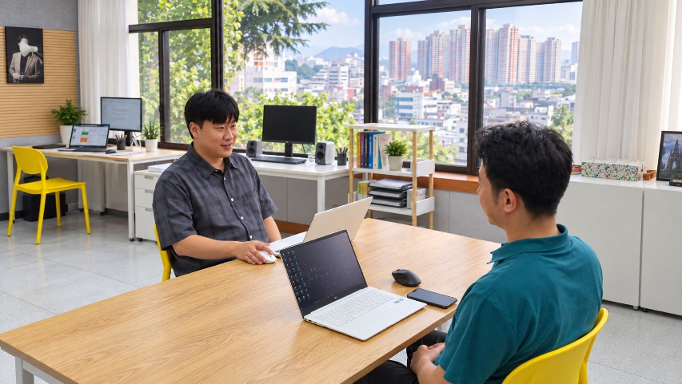
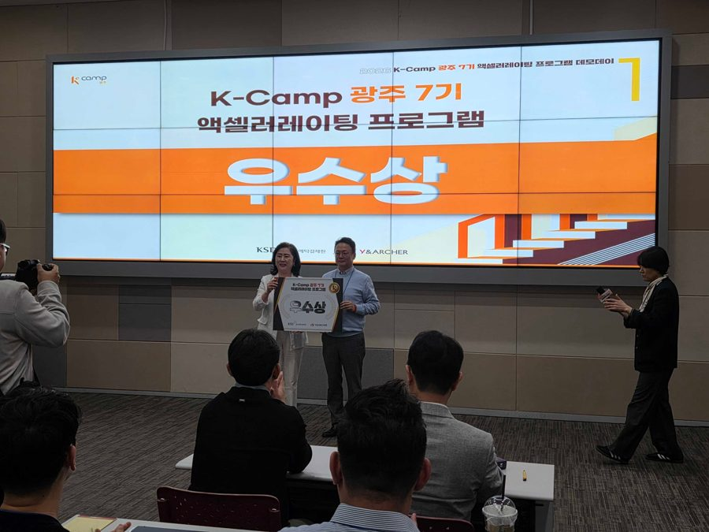
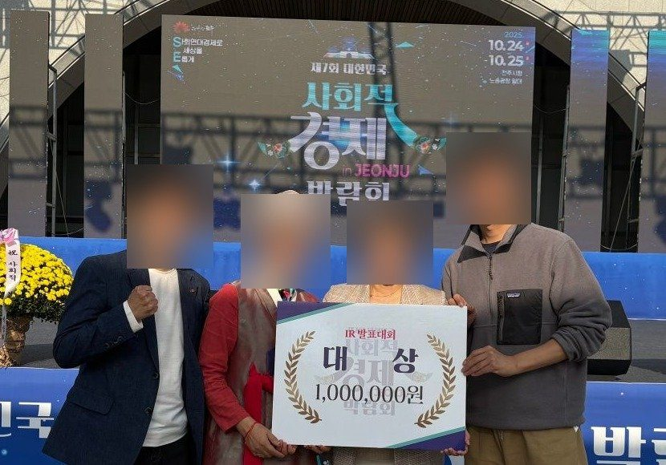
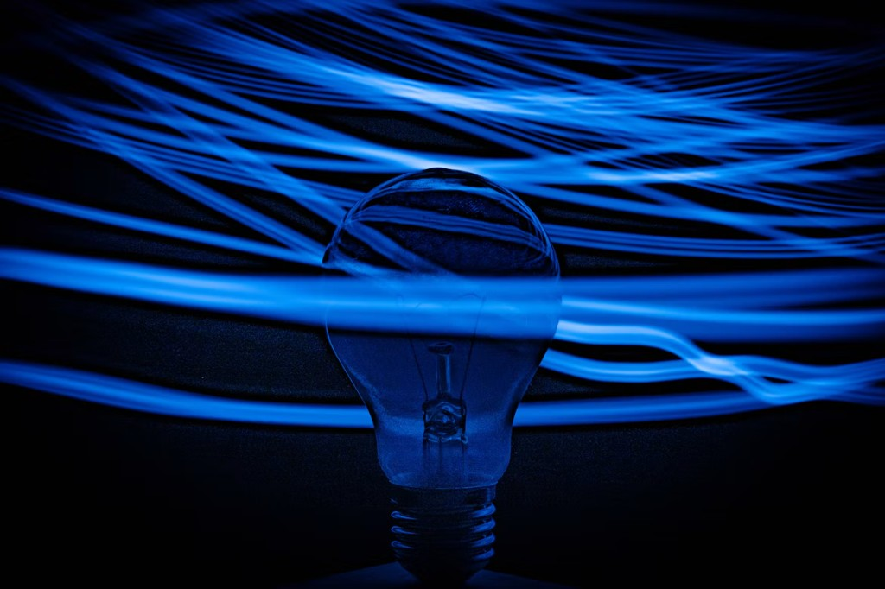
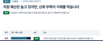
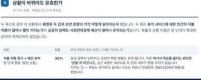
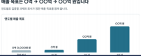
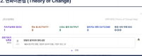
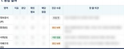

인터뷰 한 번이면 분석이 시작됩니다
담당 코치가 대표님을 직접 만나 인터뷰하고, 코칭과 코칭 사이에는 AI엔진이 그 내용으로 분석을 신속하고 밀도 있게 이어 갑니다.
G임팩트 비즈니스 코칭 기후테크 에디션
가장 가까운 코치와 AI엔진이 분석부터 자금조달까지
성장과 임팩트를 함께 세우는 비즈니스 코칭
G임팩트엔진 분석 결과물
(2026.10.15 기준)
코칭·진단을 받은 기업
(2026.10.18 기준)
숫자는 G임팩트 비즈니스 코칭 전체 기준입니다.
무료 상담 신청하기 →우리 기술이 정말 차별화된 건지 판단이 안돼요.
사업이 두 갈래인데, 무엇부터 팔아야 할지 모르겠어요.
연구는 제가 하는데, 경영은 누구와 상의해야 할지 모르겠어요.
기후테크에 특화된 AI엔진으로 성장의 길을 찾고,
기업과 지역에 맞춘 코치와 함께 임팩트를 증명합니다.
01
분야 지식을 담은에너지, 자원순환, 농식품·푸드테크, 기후 데이터·탄소회계 분야와 기후 정책·기후금융 공통 지식을 미리 담아 두고, 분석할 때 회사 사업에 맞는 내용을 찾아 씁니다.
02
코치와 함께대면 인터뷰 한 번이면 분석이 시작되고, 코칭과 코칭 사이에는 AI엔진이 분석을 이어 갑니다.
3년 로드맵과 목표를 한 흐름에 정리하고, 코치와 함께 점검합니다.
03
기술의 임팩트까지변화이론맵과 임팩트 지표를 사업화 전략과 같은 흐름 안에서 설계합니다.
투자자와 기관에 우리 기술이 만드는 변화를 보여 줍니다.

담당 코치가 대표님을 직접 만나 인터뷰하고, 코칭과 코칭 사이에는 AI엔진이 그 내용으로 분석을 신속하고 밀도 있게 이어 갑니다.

코칭 과정 / 기업 성과
기술 사업이 두 갈래로 나뉘어 무엇부터 팔지 정하지 못하던 상태에서, 두 사업을 각각 진단해 먼저 집중할 쪽을 정하고, 3년 로드맵과 변화이론맵을 세운 뒤 IR 자료 준비까지 함께했습니다.
K-Camp 광주 우수상 수상 (2026. 8)

코칭 과정 / 기업 성과
2025년 6개월간 Growth·Impact 과정으로 사업 전략과 임팩트 구조를 정리하고, 캐주얼 IR 피드백을 거쳐 전략·성과·임팩트가 하나로 이어지는 IR 스토리를 완성했습니다.
제7회 대한민국 사회적경제박람회 IR 발표대회 대상(2025.10)
시장과 자금이 움직이는 지금,
우리 기업은 어디쯤 와 있을까요?
기후테크 에디션
단계를 고른 만큼 결과물이 쌓이고,
그 보고서는 투자 심사·IR·성과 보고로 이어집니다.
01
사업을 둘러싼 환경과
우리 강점 · 약점을 정리합니다.
02
앞으로 갈 방향과 먼저 할 일을 정합니다.
03
BM · 전략 코칭을 포함해 사업 목표와 먼저 실행할 과제를 정하고, 함께 점검합니다.
01
소셜미션과 브랜드를 정리합니다.
02
ESG를 진단하고 개선 방향을 정리합니다(소셜브랜드 가이드 포함)
Plus
AX 코치가 지원사업·IR 도구를 원격으로 설치하고 사용법을 알려 드립니다.

추가 코칭사업을 둘러싼 환경과 우리 강점·약점을 정리합니다
언제든 BM 진단부터 다시 (진단 뒤엔 늘 AI엔진 분석)
재진단 결과로 다음 6개월을 시작
BM 코칭 이상 고객이 추가 · 받은 보고서로 지원사업·IR 자동화 도구 셋팅
유료 코칭 고객 가운데 동의한 곳을 협력 투자사에 소개(별도 요금 없음)
코치와 대표가 같은 화면에서 진단하고, 결과물을 함께 확정합니다.

BM 코칭BM분석 보고서
전략 코칭BM전략 보고서
동행 코칭목표 보고서
소셜브랜드 코칭소셜브랜드 가이드
ESG 코칭ESG 전략 보고서이름과 수치를 가린 보고서 샘플입니다.

분석에서 자금조달, 투자 연결까지 한 흐름으로 함께합니다.
좌우로 밀어 전체 비교표를 볼 수 있습니다
| 비교 기준 | A사 · AI 계획서 도구 | C사 · BM 컨설팅 상품 | D사 · 수도권 액셀러레이터 | G임팩트 비즈니스 코칭 |
|---|---|---|---|---|
| 분석 범위 | 문서 초안 | BM 기획(시장·경쟁은 별도 옵션) | BM · 임팩트 · 투자 | BM · 시장 · 경쟁 · 임팩트 기본 포함 |
| 누가 하나 | 사용자 혼자 | 전문가 상담 1회 | 전문가 + AI | 코치가 대면 인터뷰 → AI 분석 → 대표 확정 |
| 현장 | 온라인 | 온라인 | 서울 | 지역마다 코치 배정 · 직접 방문 |
| 다음 단계 | 사용자가 직접 보완 | 문서 납품 | 수도권 위주 투자 연계 | 자금조달 AI 도구 및 대응전략 세팅 |
기업이 있는 지역에 코치를 배정해 직접 만납니다.
엔진이 분석을 맡고, 코치는 대면 인터뷰·현장 코칭에 집중해 가격을 낮게 유지합니다.
지역에서 사업을 함께 깊이 들여다봐 줄 사람을 찾던 대표님들이 코칭 뒤에 만든 변화와, 직접 남긴 말입니다.
후기는 참여 기업 대표의 카톡·코칭 녹취 원문 일부입니다. 이름과 기업명은 가렸고, 해당 기업이 동의했습니다. 수상은 해당 기업의 성과입니다(박람회 수상: 2025.10.27 박람회 보도자료).
“매년 전략보고서로 한 해를 조망하고 다음 해를 설계하는 과정이 핵심 경영 루틴이 되었습니다. 가장 큰 성과는 ‘보이지 않던 리스크의 가시화’입니다. 일관된 프레임워크 안에서 의사결정의 질이 높아졌습니다.”
베타 1~2기 참여기업 · 전략과 의사결정
“제 주변에 이쪽으로 정말 탁월한 분은 코치님 한 분뿐이에요.”
IR역량강화 참여 기업 대표
“다른 데서는 IR 자료 보면서 여기 수정해야 된다 하거나, 그냥 말로 하다 끝나는데 … 이렇게 적으면서 서로 대화하니까 더 좋은 것 같습니다.”
Growth 과정(BM 진단 인터뷰) 참여 기업 대표
“기관에서 주로 하는 컨설팅 같은 경우 기업에 대한 이해도와 피드백, 시간이 한계가 많았습니다. 그래서 컨설팅 내용도 깊이가 없이 시간만 채우는 경우가 대부분이었습니다.”
베타 3기 참여 기업 대표
대부분의 벤처투자가 수도권에 몰려있는 만큼, 지역 기업에는 가까이에서 함께할 성장 파트너가 필요합니다.
기관의 지원사업에 G임팩트 비즈니스코칭을 더해, 참여기업의 성장과 투자 유치까지 함께 챙깁니다.
공통 기준으로 진단한 뒤, 기업 수준에 맞는 계획을 세웁니다.
현장 코칭과 AI 도구로, 기업이 실제로 쓰는 결과물을 남깁니다.
기업별 결과물과 성과를 보고서로 바로 드립니다.
코치가 대표님을 직접 만나 인터뷰하는 것으로 분석이 시작됩니다. 한 회차는 60분이고, 회차 사이의 분석은 AI엔진이 맡아 코치가 검토한 보고서를 다음 회차에서 함께 읽습니다.
전략 코칭에서 실증 → 인증 → 첫 매출까지 3년 로드맵을 함께 세웁니다. 인증을 기다리는 동안에도 먼저 팔 시장과 필요한 자금을 준비하도록 돕습니다.
6개월 이내의 BM분석 보고서가 있으면 전략 진단부터 시작할 수 있습니다.
자금조달 AI 도구로 AX 코치가 지원사업·IR 자동화 도구를 원격으로 설치하고 쓰는 법을 알려 드립니다. 실증·R&D 과제 신청서와 투자 자료는 기업이 직접 쓰고 제출하며, BM 코칭 이상을 받은 고객이 추가로 신청할 수 있습니다.
G임팩트써클 모의 IR로 수도권 투자사 앞에서 발표하고 피드백을 받습니다. 유료 코칭 고객 가운데 동의한 기업만 협력 투자사에 연결하며, 별도 요금은 없습니다.
기업이 있는 지역에 코치를 배정해 직접 만납니다(직접 방문은 2026년 12월 시범부터).
동행 코칭은 6개월 단위로 이어집니다. 6개월 뒤 재진단해 1·2차 BM 점수를 견주고, 다음 6개월로 이어집니다.
지금의 고민부터 다음 투자까지,
G임팩트가 함께 합니다
이제 대표님 회사의 이야기를 들려주세요.
첫 상담은 무료이고, 회사 상황에 맞는 과정을 안내해 드립니다.